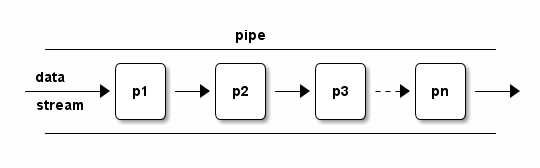
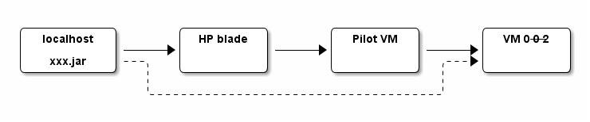

Shell as a Scripting Language
Table of Contents
- 1. Introduction
- 2. Deal with Errors
- 3. Shell expansion
- 4. Pipe
- 5. Input and output
- 6. Variables
- 7. Processes
- 8. Misc
- 9. Q&A
- 10. Misc. Techniques
- 10.1. Shell parameter expansion
- 10.2. Brace expansion
- 10.3. Make use of Non-op colon(:)
- 10.4. Get N-th field
- 10.5. Tell if A is an element of B
- 10.6. Return values from functions
- 10.7. Logging functions
- 10.8. Wrappers for ssh
- 10.9. Ask for users confirm
- 10.10. To tell if a bash function exists or not
- 10.11. To tell if it is an interactive shell
- 10.12. Socket
- 10.13. Use of "shortcut" expressions
- 10.14. Why not "basename"
- 10.15. Array
1 Introduction
1.1 Shell scripting makes our lives easier
Address real-world issues by one-liners:
- Delete confict ssh key
sed -i 5d ~/.ssh/known_hosts
- Retry
while heat stack-list | grep -q UPDATE_IN_PROGRESS; do sleep 30; done # Beep to alert you after it is done for i in {1..30}; do echo -ne "\a"; sleep 1; done
- Deliver patched files to labs
for each in $(nova list | grep 0-0-1 | grep -o 'prov3-net=[^; ]*' | cut -d'=' -f 2); do scp 8661ConfigSNMP.sh $each:/apps/snmp/8661ConfigSNMP.sh; done
- Delete duplicated files
find . -path '*/DIAM/*/*' -exec md5sum {} \; | awk '{files[$1]++;} files[$1]>1{system("rm "$2)}'
1.2 It is no picnic
Easy to learn, hard to grasp
- Mastering shell == Mastering loads of command line tools
- sed, awk, find, grep, ssh, netstat/ss/sn, df, …
- A number of pitfalls and portability issues
1.3 How to learn
It is a programming language, NOT a simple tool
- Read a book which teaches you shell scripting systematically.
- Learning from examples is NOT adequate.
- Clear understanding is the key
- Make good use of the (info "(bash)")
For instance, what does
|&mean and why[ -f a.* ]"works as expected" but[ [ -f a.* ]]does not (more discussion)? - Hone your skills by using them in your daily work.
- Listen to a lecture or two does NOT make you a shell expert.
- Time-consuming it might be at first, it will pay off very soon
1.4 Do not ask for trouble
- Script in
kshorbash, stay away fromcsh - Many scripts just written and thrown
- Use shell scripts as a glue layer only
- Use Python/TCL etc. for complex tasks
- Comply with conventions and traditions.
E.g. exit code 0 for success, non-zero for failure.
- Group code into small functions.
- Check exit code.
2 Deal with Errors
2.1 Prevent coding errors
You don't have to wait until bugs got you at run time.
bash -n test.sh- Builtin, simplistic syntax checker.
- sh and ksh also support this.
- shellcheck strongly recommended
- A static analysis and linting tool for sh/bash scripts.
- Has as web for online validation
- Can be integrated into vim/emacs.
Demo: edit the following script in emacs on hpds09 to show how flycheck with shellcheck works.
#!/bin/bash if [ -f test.* ]; then echo ok; fi if [ a =~ test.* ]; then echo ok; fi ssh user@remote "echo $PWD" shall_we_continue=true; echo shall_we_contiune function my_fun { echo $1 } result = $(my_fun)
2.2 Catch errors at run time
- Set nounset
set -o nounset(orset -u)Raise errors for use of unbound shell variables (neither defined locally nor imported).
- Set errexit
set -o errexit # or "set -e"
NOTE: Better use it during test and debug only because, in production environment, you may need more control. For example,
result=$(cmd); if [ $? -ne 0 ]; then ...; fi - Trap signals etc.
#!/bin/bash function sigHandler { date } trap sigHandler SIGINT SIGTERM SIGHUP trap "echo done" EXIT trap "echo error occured" ERR trap SIGTERM # reset handler
2.3 Coding for debugging
- Do NOT discard stderr without good reason
my_cmd >/dev/null 2>&1 # NOOOOOO!
Error message you discarded can be vital for debugging.
- Logging for debug
Deliberately designed log is much superior then single-step debug.
# make use of the fact that `true' and 'false' are valid commands DEBUG_ON=false function debug { if $DEBUG_ON; then echo "DEBUG: $*" | tee -a $LOG_FILE fi }
- Command wrapper
1: # report file name and line number, USE WITH CAUTIOUS 2: function run_cmd { 3: "$@" 4: if [ $? -ne 0 ]; then 5: echo "ERR: FILE: ${BASH_SOURCE[1]} LINE: ${BASH_LINENO[0]}" 6: exit 1 7: fi 8: } 9: 10: run_cmd touch "./path/non-exists/b" 11: 12: # # Less convenient, but also works in ksh 13: # SCRIPT_NAME=$(basename $0) 14: # echo "ERR: FILE: $SCRIPT_NAME LINE: $LINENO" >&2
$ ./test.sh touch: cannot touch `./path/non-exists/b': No such file or directory ERR: FILE: ./test.sh LINE: 10
2.4 Debug
set -xand PS41: #!/bin/bash 2: 3: function my_fun { 4: echo this is my function 5: } 6: 7: my_fun
$ PS4='Line ${LINENO}: ' bash -x test.sh Line 7: my_fun Line 4: echo this is my function this is my functionOr, add the following snippet into your script:
export PS4='+ ${LINENO}: ' set -x
- Trap error
1: #!/bin/bash 2: set -o errexit 3: trap 'echo error at $LINENO: $var' ERR 4: 5: var="hi there" 6: echo $var | sed 'oops' 7: echo 'done'
$ ./test.sh sed: -e expression #1, char 1: unknown command: `o' error at 6: hi there
- Set quit point
#!/bin/bash function quit_point { # This is to abort a script intentionally during tests. # Usage: add lines some like the following into shell scripts # quit_point [once] [whatever notes ...] # If the first argument is string "once", the quit_point quits only once. # I.e, the line will be commented out after being hit. local temporary=$1 local file=${BASH_SOURCE[1]} local line=${BASH_LINENO[0]} echo "Quit point: $file::$line $*" [ "$temporary" == "once" ] || sed -i "${line}s/^/#/" $file exit 1 }
3 Shell expansion
3.1 Understand what a command expects
ls *.txt # :) ls '*.txt' # :( find . -iname *.txt # :( find . -iname '*.txt' # :)
3.2 Wrong commands may or may not get expected result
Surroundings changes meaning of command
$ ls $ echo 'hi there' | tr [a-z] [A-Z] HI THERE $ touch a $ echo 'hi there' | tr [a-z] [A-Z] hi there $ touch a b $ echo 'hi there' | tr [a-z] [A-Z] tr: extra operand `b' Try `tr --help' for more information.
Some other WRONG commands
[ -f a.* ]
[ $var -eq 0 ]
3.3 Special characters in result of shell expansion may cause issues
$ touch -- -j $ ls a b -j $ ls * ls: unknown option -- j Try `ls --help' for more information. $ ls -- * a b -j $ ls ./* ./a ./b ./-j
3.4 Special characters in input string may cause issue
#!/bin/env python import os import commands if __name__ == '__main__': log_str = "this is a `test'" os.system('echo "%s"' % log_str)
$ cat test.py $ ./test.py sh: -c: line 0: unexpected EOF while looking for matching ``' sh: -c: line 1: syntax error: unexpected end of file
This is based on a real-world bug. Since the log_str varies for each run, this kind of issue is harder to debug.
3.5 Use quotes and escape characters correctly
Using Quotes Makes Your Scripts More Robust
Understanding Quoting and Escaping in Bash Scripts
TODO:
ssh user@remote "cmd ..." ssh user@remote "cmd ... | grep ..." ssh user@remote "cmd ..." | grep ...
4 Pipe

4.1 Make programs filters
- Eliminate the need of interim files
- Flexible
- Extensible (combine tools)
- Don't underestimate these benefits!
Here are some examples
- Streaming video
wget ftp://qdcvs/input.avi -O - | mplayer -
- Call remote functions "locally"
cat ./conf.rnc | ssh me@1.2.31.61 'java -jar ./trang.jar' > ./conf.rngCompare above command line with the following one which is without pipe support.
scp ./conf.rnc me@1.2.31.61:./ \ && ssh me@1.2.31.61 'java -jar /trang.jar conf.rnc conf.rng' \ && scp me@1.2.31.61:./conf.rng ./
- New usage of an old script
These commands combine to prepare a word bank for English contest. But none of them was designed fro that.
cat input1 input2 \ | tr ' ' '\n' \ | grep -o '[A-Za-z][A-Za-z][a-zA-Z]*' \ | sort -u \ | mydraft \ | grep -v "\(Please\|Lucky\) " \ | head -6
- Transfer files to a host hops away

# Note how "cat" and "ssh" act as filters cat alarm2mcas-1.0.jar | ssh root@135.1.136.193 \ 'ssh root@10.102.1.126 \ "cat - > alarm2mcas-1.0.jar && \ scp ./alarm2mcas*.jar 0-0-2:/path/to/lib/extensions/"'
- Streaming video
4.2 Always set pipefail
Note that this is necessary even if you already set errexit.
$ cat file_non_existant | while read line; do echo got $line; done cat: file_non_existant: No such file or directory $ echo $? 0 $ set -o pipefail $ cat file_non_existant | while read line; do echo got $line; done cat: file_non_existant: No such file or directory $ echo $? 1
If set, the return value of a pipeline is the value of the last (rightmost) command which exits with a non-zero status, or zero if all commands in the pipeline exit successfully.
4.3 Piped blocks run in subshell
#!/bin/bash # Example 1 echo "hi there" | read var echo $var # OOPS, prints nothing # Example 2 echo "hello world" | while read line; do var='foo' echo "in: $var" # OK, prints 'hello world' done echo "out: $var" # OOPS, prints nothing
Solution (courtesy of Stanley): use '<' etc.
#!/bin/bash while read line; do var='foo' echo "in: $var" done <<<"value"
4.4 Pipe sign is a sequence point
p1 2>&1 > a.log # does NOT work as expected p1 2>&1 | tee a.log # works
5 Input and output
5.1 stdout != stderr
- Error messages go to stderr. Otherwise
- Case 1
mycmd # OOPS, log messages flush mycmd >/dev/null # OOPS, error message discarded
- Case 2
set -e # Make this shell exit on error # ... result=$(mycmd) # OOPS, when mycmd fails, error message is # stored in result, but is not printed on # screen. debug "$result"
- Case 1
- Buffered versus un-buffered.
- stdin/stdout vs
/dev/tty
5.2 Temporary files
- Possible issues of temporary files
- Initialize and clean up needed and incur failures
- Fail to create the file: no permission.
- Fail to initialize the file: forget or no permission to remove/truncate the file.
- File name collision: different applications use the same file name, or multiple instances acccess the same file simultaneously.
- Garbage left in system: forget or fail to delete the file.
- Extra disk space needed: to store temporary files.
- Performance drop: read/write from/to hard disk.
- Initialize and clean up needed and incur failures
- Tips with regards temporary files
- Aviod temporary files when possible, use pipe instead.
- Put temporary files under
$TMP(/tmp/ifTMPis not set) so that temporary files do not scatter all arround the system. - Use command
mktempto ensue each temporary file has a uniq file name.- At least, use
tmplate$$ifmktempnot available
- At least, use
5.3 Use "Here Document"
if blahblah; then cat <<EOF One "here document" instead of multiple echo Starts from beginning of line EOF fi
- Starts from the very beginning of line
- No indention allowed for delimiter
- Leading white space in content is preserved in output
- Can use any delimiter
cat <<!!! NOTE: I do NOT recommend using "!!!" as a delimiter !!!
- Ignore leading TABs with
<<-(BAD idea!)if blahblah; then cat <<-EOF Leading TABs are removed in the output But white space are kept Makes it error-prone EOF fi
The TABs may be converted to white space inadvertently, rendering the script grammatically incorrect.
- Quote delimiter to prevent variables from being expanded
$ i=foo $ bash <<EOF > i=bar > echo $i > EOF foo $ bash << 'EOF' > i=bar > echo $i > EOF bar
5.4 getopts
- The difference between
?and\?. - The usage of
OPTIND.OPTIND is not automatically reset. Hence, do remember to reset OPTIND before (to ensure getopts work as expected) and after (in case others forget to do so) getopts.
- Usually we do NOT add a leading ":" in OPTSTRING which puts getopts into silent mode (refer to bash manual for more details).
1: #!/bin/bash 2: 3: function main { 4: # Reset OPTIND to ensure getopts work as expected. This is especially 5: # important in functions. 6: OPTIND=1 7: 8: local optstring="ndst:" 9: 10: # First round, set flags before performing any task 11: while getopts $optstring opt; do 12: case $opt in 13: n) echo set_dry_run_flag;; # no-test 14: t) echo target="$OPTARG";; 15: \?) exit 1;; 16: # NOTE: putting "*)" or "?)" at the end also works, think the 17: # differences 18: esac 19: done 20: 21: # Done with options, deal with arguments if needed 22: shift $((OPTIND - 1)) 23: 24: if [ $# -ne 1 ]; then 25: echo "ERR: missing ..." >&2 26: exit 1 27: fi 28: 29: var1="$1" 30: # ... 31: 32: echo "=== Second round parsing ===" # This is usually not needed 33: 34: OPTIND=1 # reset OPTIND to reparse again 35: 36: # Parse options and act accordingly 37: while getopts $optstring opt; do 38: case $opt in 39: d) echo do_backup_daily;; 40: s) echo do_sync_repos;; 41: \?) exit 1;; 42: esac 43: done 44: 45: # Reset OPTIND in case others forget to do so. 46: OPTIND=1 47: } 48: 49: main "$@"
5.5 read
- Tricky when used in a pipe
Refer to *Piped blocks run in subshell
- Works with here string
read first second third rest <<< $input
- Rest of the line get into the last var
read first second third rest <<< $input read var1 var2 <<< $input
var2 = second + third + rest
- This does NOT work
while read line < input.txt; do something done
- Assign a multi-line string to a variable
read -d '' var <<EOF And We needn't take care about quotes (' and ") EOF
NOTE: there must be a space after
-d, please think about why.
5.6 select
local IFS=$'\n' # In case session names contain whitespaces. Must # 'local' to NOT pollute the global 'IFS'. # $'LITERAL_STR' => ansi-c quoting local PS3="Select a session: " select session_name in $sessions; do if [ -n "$session_name" ]; then # A valid choice tmux -2 attach -t "$session_name" return else echo "Invalid index '$REPLY', please retry" fi done
5.7 Open/close file descriptors
1: # open a new fd for both read & write. The shell will find an unused fd number 2: # and store it in "fd" 3: exec {fd}<>input.txt 4: 5: while read -u $fd line; do 6: echo "read: $line" 7: done 8: 9: echo "hello from test.sh" >&$fd 10: exec {fd}<&- # close input fd 11: 12: # Explicitly specify fd number 13: exec 3<input.txt 14: read -u 3 line 15: echo $line 16: exec 3<&- 17: 18: # save and restore a fd 19: exec {fd}>&1 # dup (save) stdout 20: exec >/dev/null # change stdout to discard everything 21: echo "hello null" 22: exec 1>&$fd {fd}>&- # restore stdout, close 3 23: echo "hello world"
5.7.1 Note for ksh
In ksh, file descriptors created this way are private if they are greater
than 2 (see below). Use ( cmd >&3 ; ...) 3>$log_file or alike.
exec [command [arg …]] …
If no command is given except for I/O redirection, the I/O redirection is permanent and the shell is not replaced. Any file descriptors greater than 2 which are opened or dup(2)'d in this way are not made available to other executed commands (i.e. commands that are not built-in to the shell).
5.7.2 Wholes in files
Be aware the risk when open files this way.
Usually, it seems ok to have multiple processes access a file simultaneously. That is because those processes are not really modifying that file in parallel.
When open a file this way, the file is kept open until the shell terminates, hence largely increases the probability of creating wholes in the file.
Note that the following code snippet has the same issue.
(
call_another_time_consuming_script
or_call_a_sequence_of_commands
) >log_file
The key to reduce the risk is to minimize the durations that files being opened.
One solution is to run an "internal logd" (courtesy of Wilson Liu, with modification).
function logger_err { while read line; do echo $line 1>&2 echo "$line" >> $logFile done } function logger { while read line; do echo "$line" | tee -a $logFile >&2 done } function worker { whatever_to_be_done } (worker | logger ) 2>&1 | logger_err
5.8 tee to file descriptors (fd)
- If available, make use of the
/dev/fdfile sytem.# error messages go to both stderr and stdout echo "ERRO: $@" | tee /dev/stderr # go to stdout and a log file (opened with fd 3) echo "ERRO: $@" | tee /dev/fd/3
- Otherwise, use subshell
# IN ADDTION to stdout, error messages go to both fd 2 and 3 echo "ERRO: $@" | tee >(cat - &2) >(cat - >&3)
5.9 Truncate files
Note that "echo" add a newline by default. Sometimes this could be an issue.
$ > test.txt ; wc -l test.txt 0 test.txt $ echo > test.txt ; wc -l test.txt 1 test.txt $ echo -n > test.txt ; wc -l test.txt 0 test.txt
6 Variables
6.1 There is NO type
Everything is string and is converted according to operations:
$ [[ 010 -gt 009 ]] && echo true || echo false -bash: [[: 009: value too great for base (error token is "009") false $ [[ 010 > 009 ]] && echo true || echo false true
NOTE: refer to keyword declare in (info "(bash) Bash Builtins") for more
information such as integers, indexed/associated arrays.
6.2 Attributes of variables
- local variables
local var="hi there"
- readonly variables
readonly var=blahblah
- automatically convert to lower-case/upper-case
declare -u var declare -l response=yes
This especially useful when reading response from users interactively.
declare -l response=no read -p 'Continue?(yes|no) ' response if [ "$response" == "no" ]; then exit 0 fi
6.3 indirect expansion
a=$(eval "echo \$$ref") ?
For bash
$ var="hi there"
$ ref=var
$ echo ${!ref}
hi there
For ksh
$ var1="foo bar" $ var2="hello world" $ nameref ref=var2 $ echo $ref hello world
See more discussion
7 Processes
7.1 Shebang
- Always start with
#!/bin/shor alikeOtherwise, what if a user runs the script in an incompatible shell?
- dos2unix or unix2dos
$ ./test.sh -bash: ./test.sh: /bin/bash^M: bad interpreter: No such file or directory $ file test.sh test.sh: Bourne-Again shell script, ASCII text executable, with CRLF line terminators $ dos2unix test.sh dos2unix: converting file test.sh to Unix format ... $ ./test.sh hello world
- Suggestion: Do NOT name files with suffix
- install_lab.sh
- NO
- install_lab
- YES
7.2 SUID does not work with scripts
- For the sake of security, SUID does not work with shell scripts.
#include <unistd.h> #include <stdio.h> #include <errno.h> int main() { char* executable = "testscript"; execl (executable, executable, NULL); perror("fail to exec"); // exec returns == error occured return errno; }
- NOTE, for bash, must add "-p".
#include <unistd.h> #include <stdio.h> #include <errno.h> int main(int argc, char* argv[]) { char* executable = "/usr/local/bin/bash"; execl (executable, executable, "-p","./testscript", NULL); perror("fail to exec"); // exec returns == error occured return errno; }
7.3 Evoke correct programs
- Always use absolute path
ECHO=/bin/echo # ... $ECHO "that's it" /bin/rm tmp.txt
- Or, overwrite PATH
Reset PATH to a minimal set of directories at the beginning of your scripts.
- Or, define functions to override the commands
#!/bin/bash function awk { /bin/awk "$@"; } function basename { /bin/basename "$@"; } function chmod { /bin/chmod "$@"; } function chown { /bin/chown "$@"; } # ...
- Or, un-alias commands when calling them.
Otherwise, you'll get this(for bash scripts, you need not worry about this):
$ alias echo='echo "do something nasty"' $ echo foo do something nasty $ \echo foo foo
7.4 Command line has length limitation
Note that it is a command line limitation, hence
- shell built-ins like
echonot affected - content sent via pipe not affected
$ echo $0
-bash
$ getconf ARG_MAX
2097152
$ a=$(echo 1234567890{1..200000})
$ echo ${#a}
3288894
$ rm -f $a
-bash: /usr/bin/rm: Argument list too long
$ # Make use of xargs
$ echo $a | xargs rm -f
$ # split at whitespaces
$ for each in $a; do sth with $each; done
$ # split according to position
$ while [ ${#a} -gt 200000 ]; do sth ${a:0:200000}; a=${a:200000}; done
7.5 Inter-process lock
- mkdir
mkdiris an atomic operation, can be used in shell scripts as lock.mkdir lockDir 2>/dev/null if [ $? -ne 0 ]; then echo "no lock" exit 1 fi echo "got lock" rmdir lockDir
- flock
function try_lock { local lock_name="$1" local lock_file="/tmp/${lock_name}.lock" local lock_fd # shellcheck disable=SC2093,SC1083 exec {lock_fd}>$lock_file flock -e -n $lock_fd if [ $? -ne 0 ]; then return 1 fi } my_name=$(basename $0) if ! try_lock "$my_name"; then echo "Another instance of $my_name already running" else echo "Got the lock." echo "And, the lock will be automatically released" sleep 10 fi
7.5.1 Note for ksh
In ksh, one has to do it this way since the reason mentioned in here.
(
flock -e -n 9
if [ $? -ne 0 ]; then
echo failed to grab the lock
else
echo got the lock
# do the job
fi
) 9>$lock_file
7.6 Timeout a process
If command "timeout" available, maybe you want to use it.
Otherwise, here is a function from "expert shell scripting":
timeout() { waitfor=5 command=$* $command & commandpid=$! (sleep $waitfor ; kill -9 $commandpid >/dev/null 2>&1) & watchdogpid=$! sleeppid=$(ps $ppid $watchdogpid | awk '{print $1}') wait $commandpid kill $sleeppid >/dev/null 2>&1 }
8 Misc
8.1 Use better syntax/notation
- Use
sourceinstead of.So that it is much easier to search it.
- Use
$()instead of``since- The former is easier to be spotted.
- The former does not incur an extra level of escaping. Therefore, is more
straightforward.
$ a=$(echo 'a b' | sed 's/ /\\t/'); echo "$a" a\tb $ a=`echo 'a b' | sed 's/ /\\t/'`; echo "$a" a b $ a=`echo 'a b' | sed 's/ /\\\\t/'`; echo "$a" a\tb
- The former is easier to nest
- Use shortcut expressions
./configure && make && make install mkdir -p $dest/healthTools || errout "Failed ..." pilot_is_active && echo "active pilot" || echo "standby pilot" find . -name 'core*' -o -name 'debuginfo*' -mtime -3 -exec ls -l {} \;
Note, however, sometimes, take this for example, shortcut expressions may incur surprises.
8.2 Regular expressions are greedy
echo "abcd...doo" | grep -o "a.*d" # ==> abcd...d
A real world bug:
# expect header:
# <cr><lf><lf>^^^<sid>^<year>-<month>-<day>^xxx
\r\n\n .* [0-9][0-9][0-9][0-9]-[0-1][0-9]-[0-3][0-9] ...
^^ <--- oops!
8.3 Number literals not necessarily decimals
- In bash:
$ a=010 $ echo $a 010 $ echo $((a)) 8 $ [[ 010 -gt 9 ]] && echo true || echo false false
- In ksh:
$ a=010 $ echo $a 010 $ echo $((a)) 10
8.4 Command outputs may vary according env and result
- (Format of) Outputs may change due to env. For example: (man "ps")
If ps can not determine display width, as when output is redirected (piped) into a file or another command, the output width is undefined (it may be 80, unlimited, determined by the TERM variable, and so on). The COLUMNS environment variable or –cols option may be used to exactly determine the width in this case. The w or -w option may be also be used to adjust width.
- Outputs may "change" to due the content of it. E.g. (man "netstat")
-T –notrim Stop trimming long addresses.
–wide , -W Do not truncate IP addresses by using output as wide as needed. This is optional for now to not break existing scripts.
Btw., "netstat" is obsoleted, use "ss" instead.
8.5 Avoid name space contamination by running in subshells
# MY_VAR is still invisible afterwards (source test.sh && echo $MY_VAR) # Eevrything in test.sh come together with MY_VAR source test.sh && echo $MY_VAR
9 Q&A
Thanks
10 Misc. Techniques
10.1 Shell parameter expansion
${PARAMETER:-WORD}
${#PARAMETER}
${PARAMETER#WORD}
${PARAMETER##WORD}
${PARAMETER%WORD}
${PARAMETER%%WORD}
${PARAMETER/PATTERN/STRING}
$ v1=ABCD; echo ${v1,,}
abcd
$ v2=efgh; echo ${v2^^}
EFGH
For more details, (info "(bash) Shell Parameter Expansion")
10.2 Brace expansion
In addition to parameter expansion, there is also brace expansion
$ echo {one,two,three}
one two three
$ echo {1..9}
1 2 3 4 5 6 7 8 9
$ echo {1..9..3}
1 4 7
$ echo foo_{1,3,5}_bar
foo_1_bar foo_3_bar foo_5_bar
$ scp lgfang@remote:{path1/to/file1,path2/to/file2} ./
10.3 Make use of Non-op colon(:)
function validate{ : } if xxx; then : else Do sth. fi while :; do Do sth. done
10.4 Get N-th field
- Here string
read x x third rest <<< $input
- Define a function
function third { echo "$3" } input="a b c d" third $input # => c function nth { # get the nth field of the input local index="$1" shift echo ${!index} } nth 2 $input # => b
- Or, use "array" of bash
1: #!/bin/sh 2: FIELD_A=0 3: FIELD_B=1 4: FIELD_C=2 5: #... 6: ATTRS=(a b c) 7: echo "Value of field A is ${ATTRS[$FIELD_A]}" 8: echo "Value of field B is ${ATTRS[$FIELD_B]}" 9: echo "Value of field C is ${ATTRS[$FIELD_C]}"
10.5 Tell if A is an element of B
Use array instead of this if possible.
# bash 4.2 function is_element_of { local var="$1" local list="$2" local pattern="\b${var}\b" if [[ "$list" =~ $pattern ]]; then # NOTE: do not quote $pattern, reason: # http://stackoverflow.com/questions/218156/bash-regex-with-quotes return 0 else return 1 fi }
$ is_element_of 0-0-1 "0-0-2 0-0-11" && echo yes $ is_element_of 0-0-11 "0-0-2 0-0-11" && echo yes yes
10.6 Return values from functions
output parameter
function my_fun { var_name=$1 # leading underscore to avoid name conflict. If called as 'my_fun _result', # the caller will not see the change of '_result' because it is local to # my_fun. _result="value from my_fun" eval "var_name='$_result'" } my_fun out echo $out
10.7 Logging functions
unset _LOG_FILE # ensure log goes to stdout util logging setup function log { # 1. Do not quote "LOG_FILE", so that if it is unset, 'tee' simply copy # input to output. # 2. Do not use this function directly, use one of the wrappers below. local level=$1 shift local message="$*" echo "$(date +'%y-%m-%d %H:%M:%S') $level: $message" | tee -a $_LOG_FILE } function error_out { error "$*" exit 1 } function error { log ERRO "$*" >&2 } function warn { log WARN "$*" >&2 } function info { log INFO "$*" } function debug { log DEBUG "$*" >/dev/null # record in log file only }
10.8 Wrappers for ssh
function ssh_run { debug "ssh '$1' '$2'" # shellcheck disable=SC2029 ssh -o StrictHostKeyChecking=no -o BatchMode=yes -q -tt "$1" "$2" } function ssh_checked_run { msg=$(ssh_run $1 "$2" |& tr '\n' '\\') if [ $? -ne 0 ]; then error_out "Failed on $1 '$2' $msg" fi }
10.9 Ask for users confirm
function confirm { local prompt="$1 (yes or no)? [no]: " declare -l resp='' while [ "$resp" != 'no' -a "$resp" != "yes" ]; do if [ -n "$resp" ]; then echo "Invalid input, please try again" fi read -p "$prompt" resp [ -n "$resp" ] || resp='no' done if [ "$resp" == 'yes' ]; then return 0 else return 1 fi }
$ if confirm 'Do you want to continue?'; then echo go on; fi Do you want to continue? (yes or no)? [no]: $ if confirm 'Do you want to continue?'; then echo go on; fi Do you want to continue? (yes or no)? [no]: Yes go on
10.10 To tell if a bash function exists or not
if declare -f funname >/dev/null; then echo "funname defined" fi
10.11 To tell if it is an interactive shell
This is freequently used in .bashrc
- This one seems most portable. It tests if stdin is tty
if [ -t 0 ]; then # interactive shell stty erase "^?" # kill "^U" intr "^C" eof "^D" set -o ignoreeof # do not logout when "ctrl + D" pressed fi
- This one should work in both ksh and bash
and is recommended by bash manual.
if [[ $- = *i* ]]; then # do interactive stuff fi # Or case "$-" in *i*) echo This shell is interactive ;; *) echo This shell is not interactive ;; esac
- This one does not always work, since PS1 may be set after the test.
if [ -z "$PS1" ]; then echo This shell is not interactive else echo This shell is interactive fi
10.12 Socket
web_server='ihgpweb.ih.xxxxxx.com' web_page='~lgfang/code/sh-scripting.html' # exec {file-descriptor}<>/dev/{protocol}/{host}/{port} exec 3<>/dev/tcp/$web_server/80 echo -e "GET /$web_page HTTP/0.9\r\n" >&3 && cat <&3 ## Or, For HTTP 1.1 # echo -e "GET /$web_page HTTP/1.1\nhost:$web_server\r\n" >&3
10.13 Use of "shortcut" expressions
10.13.1 Continue with next command until one fails
$ ./cmd 1 0 && ./cmd 2 0 && ./cmd 3 0 cmd1 succeeded cmd2 succeeded cmd3 succeeded $ ./cmd 1 0 && ./cmd 2 1 && ./cmd 3 0 cmd1 succeeded cmd2 failed $ ./cmd 1 1 && ./cmd 2 0 && ./cmd 3 0 cmd1 failed
10.13.2 Try commands in turn until one succeeded:
$ ./cmd 1 0 || ./cmd 2 0 || ./cmd 3 0 cmd1 succeeded $ ./cmd 1 1 || ./cmd 2 0 || ./cmd 3 0 cmd1 failed cmd2 succeeded $ ./cmd 1 1 || ./cmd 2 1 || ./cmd 3 0 cmd1 failed cmd2 failed cmd3 succeeded
10.13.3 Run either cmd2 or cmd3 according to result of cmd1
$ ./cmd 1 0 && ./cmd 2 0 || ./cmd 3 0 cmd1 succeeded cmd2 succeeded $ ./cmd 1 1 && ./cmd 2 0 || ./cmd 3 0 cmd1 failed cmd3 succeeded
NOTE in this case cmd2 and cmd3 are usually commands never fail. Otherwise the result will be less straight forward.
$ ./cmd 1 0 && ./cmd 2 1 || ./cmd 3 0 cmd1 succeeded cmd2 failed cmd3 succeeded
To be accurate, this form of expression means: run cmd3 if any of cmd1 and cmd2 failed.
10.13.4 If either cmd1 or cmd2 succeeded, run cmd3.
Not that run cmd2 or not depends on cmd1's result
$ ./cmd 1 0 || ./cmd 2 0 && ./cmd 3 0 cmd1 succeeded cmd3 succeeded $ ./cmd 1 1 || ./cmd 2 0 && ./cmd 3 0 cmd1 failed cmd2 succeeded cmd3 succeeded $ ./cmd 1 1 || ./cmd 2 1 && ./cmd 3 0 cmd1 failed cmd2 failed
10.14 Why not "basename"
From stackoverflow:
It's not about efficiency, it's about correctness. basename uses newlines to delimit the filenames it prints out. In the usual case when you only pass one filename, it adds a trailing newline to its output. Since filenames may contain newlines themselves, this makes it difficult to correctly handle these filenames.
It's further complicated by the fact that people usually use basename like this: "$(basename "$file")". This makes things even more difficult, because $(command) strips all trailing newlines from command. Consider the unlikely case that $file ends with a newline. Then basename will add an extra newline, but "$(basename "$file")" will strip both newlines, leaving you with an incorrect filename.
Another problem with basename is that if $file begins with a - (dash a.k.a. minus), it will be interpreted as an option. This one is easy to fix: $(basename – "$file")
The robust way of using basename is this:
# A file with three trailing newlines. file=$'/tmp/evil\n\n\n' # Add an 'x' so we can tell where $file's newlines end and basename's begin. file_x="$(basename -- "$file"; printf x)" # Strip off the 'x' added by us and the newline added by basename. base="${file_x%??}"An alternative is to use ${file##*/}, which is easier but has bugs of its own. In particular, it's wrong in the cases where $file is / or foo/.
10.15 Array
- remove elements from an array based on index
arr=(a b c d e) idx=2 arr=(${arr[@]:0:$idx} ${arr[@]:$((idx+1))})
NOTE:
unset arr[idx]does not re-arrange subscripts of elements. - remove elements from an array based on value
elem="todel" local tmp=() for each in "${arr[@]}"; do [ "$each" != "$elem" ] && tmp+=("$each") done arr=("${tmp[@]}") unset tmp